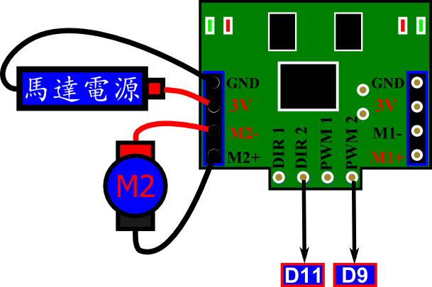
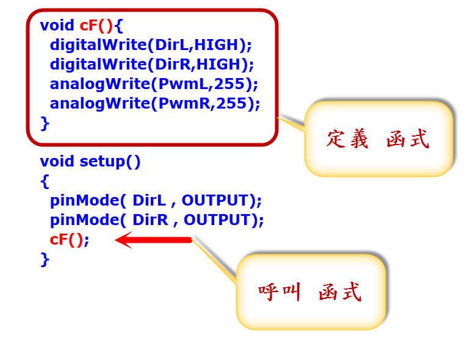
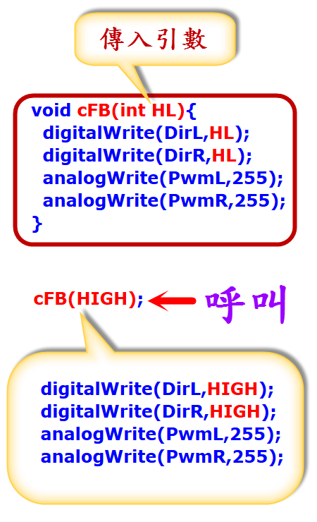

pdf svg
 pdf svg |
pdf svg |
 pdf svg |
#define DirL 11 #define DirR 12 #define PwmL 9 #define PwmR 10 void setup() { pinMode( DirL , OUTPUT); pinMode( DirR , OUTPUT); digitalWrite(DirL,HIGH); digitalWrite(DirR,HIGH); analogWrite(PwmL,255); analogWrite(PwmR,255); } void loop() { } //直行校正 //試試後退、順時針自轉、逆時針自轉 、逆時針繞圓圈、順時針繞圓圈 //將M2反過來接再試試 |
|
| //前進函式 #define DirR 12 #define DirL 11 #define PwmL 9 #define PwmR 10 void cF(){ digitalWrite(DirL,HIGH); digitalWrite(DirR,HIGH); analogWrite(PwmL,255); analogWrite(PwmR,255); } void setup() { pinMode( DirL , OUTPUT); pinMode( DirR , OUTPUT); cF(); } void loop() { } |
 |
| //後退函式 #define DirR 12 #define DirL 11 #define PwmL 9 #define PwmR 10 void cB(){ digitalWrite(DirL,LOW); digitalWrite(DirR,LOW); analogWrite(PwmL,255); analogWrite(PwmR,255); } void setup() { pinMode( DirL , OUTPUT); pinMode( DirR , OUTPUT); cB(); } void loop() { } |
| //前進3秒,後退3秒 #define DirR 12 #define DirL 11 #define PwmL 9 #define PwmR 10 void cF(){ digitalWrite(DirL,HIGH); digitalWrite(DirR,HIGH); analogWrite(PwmL,255); analogWrite(PwmR,255); } void cB(){ digitalWrite(DirL,LOW); digitalWrite(DirR,LOW); analogWrite(PwmL,255); analogWrite(PwmR,255); } void setup() { pinMode( DirL , OUTPUT); pinMode( DirR , OUTPUT); } void loop() { cF(); delay(3000); cB(); delay(3000); } |
| //前進與後退 共用函式 #define DirR 12 #define DirL 11 #define PwmL 9 #define PwmR 10 void cFB(int HL){ digitalWrite(DirL,HL); digitalWrite(DirR,HL); analogWrite(PwmL,255); analogWrite(PwmR,255); } void setup() { pinMode( DirL , OUTPUT); pinMode( DirR , OUTPUT); } void loop() { cFB(HIGH); delay(3000); cFB(LOW); delay(3000); } |
 |
#define DirR 12 #define DirL 11 #define PwmL 9 #define PwmR 10 void cM(int dL,int dR){ digitalWrite(DirL,dL); digitalWrite(DirR,dR); analogWrite(PwmL,255); analogWrite(PwmR,255); } void setup() { pinMode( DirL , OUTPUT); pinMode( DirR , OUTPUT); } void loop() { cM(HIGH,HIGH); delay(3000); cM(LOW,LOW); delay(3000); cM(LOW,HIGH); delay(3000); cM(HIGH,LOW); delay(3000); } |
| //全功能函式 #define DirR 12 #define DirL 11 #define PwmL 9 #define PwmR 10 void cM(int dL,int dR,int sL,int sR){ digitalWrite(PwmL,0); digitalWrite(PwmR,0); delay(200); digitalWrite(DirL,dL); digitalWrite(DirR,dR); analogWrite(PwmL,sL); analogWrite(PwmR,sR); } void setup() { pinMode( DirL , OUTPUT); pinMode( DirR , OUTPUT); } void loop() { cM(HIGH,HIGH,255,255); delay(3000); cM(LOW,LOW,255,255); delay(3000); cM(HIGH,HIGH,255,150); delay(3000); cM(HIGH,HIGH,150,255); delay(3000); cM(HIGH,HIGH,0,0); delay(3000); cM(HIGH,LOW,255,255); delay(3000); } |